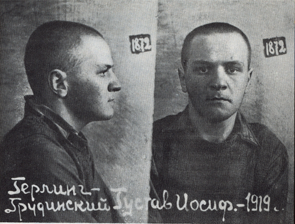

Gustav Herling

Перевод
Густав Херлинг, известный в родной Польше как Густав Херлинг-Грудзинский, родился в 1919 году в городе Киелсе. Учился в университете Варшавы. В 1940 году его арестовали органы НКВД и обвинили в попытке пересечь Советскую границу. Его приговорили к пяти годам заключения в Гулаге. Вначале отправили в лагерь Каргопол на станции Ерцево, а также трудовой лагерь около Архангельска, где он разгружал вагоны и распиливал деревья. В результате крупномасштабной амнистии польских заключенных Херлинга освободили в начале 1942 года. До конца войны Херлинг служил в военном подразделении, состоящем из освободившихся заключенных Гулага и военнопленных.После окончании войны Херлинг проживал в различных европейских городах. Он принимал активное участие в диссидентском движении и писал работы антикоммунистической направленности. Херлинг скончался в 2000 году в Неаполе, Италия.
Арест
Мое обвинительное заключение базировалось на двух фактах. Во-первых, высокие кожаные сапоги, которые я носил, служили возможным доказательством, что я являлся майором польской армии. Во-вторых, мое имя, если перевести на русский, звучало как Герлинг, что предположительно делало меня родственником известного фельдмаршала немецких воздушных сил. Обвинение гласило: «Польский офицер на содержании врага.» К счастью, мне не понадобилось много времени, чтобы убедить следователя в том, что обвинения беспочвенны. Оставался один неоспоримый факт: меня арестовали при попытке пересечения границы между Советским Союзом и Литвой.
Труд
Одним из самых тяжелых видов деятельности в лагере считалась заготовка леса. Расстояние от места работы до лагеря обычно составляло три мили. Заключенные работали целый день под открытым небом, по пояс в снегу, промокшие до кожи, голодные и уставшие. Мне не приходилось встречать заключенного, отработавшего свыше двух лет в лесу. Всякий раз, когда в Ерцево прибывало свежее поступление заключенных, то для «заброски в лес» выбирали молодых и сильных. Для бригады, работающей в лесу, невозможно было превысить норму, не прибегнув к помощи известной «туфты», целой системы искусного мошенничества. Для этого использовались различные методы; бревна складывались таким образом, чтобы снаружи связка выглядела целой. Однако внутри она была пустой, между бревнами зияли промежутки.
СТРАДАНИЯ
«В небольшой бане с мрачным серым светом, который просачивался сквозь грязные оконные стекла, от огромного бака с кипящей водой исходил пар. Перед тем, как войти туда, мы отдавали одежду для дезинсекции и получали кусочек сероватого мыла размером с фишку домино. После того, как одежда проходила санитарную очистку, ее приносил пожилой священник и вешал на кольца на длинном шесте. Наклоняя шест, он позволял одежде падать на пол по мере своего продвижения. Приятно было ощущать тяжелую гипсовость горячей одежды на чистом теле. У нас не было иного способа поменять одежду. В баню мы ходили один раз в три недели. Эти визиты были нашей единственной возможностью помыться.
ПРОПАГАНДА
«В небольшой бане с мрачным серым светом, который просачивался сквозь грязные оконные стекла, от огромного бака с кипящей водой исходил пар. Перед тем, как войти туда, мы отдавали одежду для дезинсекции и получали кусочек сероватого мыла размером с фишку домино. После того, как одежда проходила санитарную очистку, ее приносил пожилой священник и вешал на кольца на длинном шесте. Наклоняя шест, он позволял одежде падать на пол по мере своего продвижения. Приятно было ощущать тяжелую гипсовость горячей одежды на чистом теле. У нас не было иного способа поменять одежду. В баню мы ходили один раз в три недели. Эти визиты были нашей единственной возможностью помыться.
Конфликт
“Среди урок особую популярность снискала игра в карты, в которой вещи других заключенных ставились на карту. Главный момент заключался в том, что проигравший обязан был забрать вещь жертвы, которая ставилась им на карту. В 1937 году в самом начале существования трудовых лагерей на карты ставилась человеческая жизнью, потому что на тот момент она являлась самым ценным предметом. Политический заключенный, находившийся в противоположном углу барака, не мог себе представить, что засаленные карты, которые шлепались на маленькую доску балансирующую на коленях игроков, решали его судьбу.”
Солидарность
Совершенно понятно, что человек, лишенный всего, кроме надежды, должен начинать свой день с мыслями о надежде. Советские заключенные были лишены даже надежды, потому что ни один из них не мог знать наверняка, когда его освободят. Во время моего полуторагодовалого пребывания в лагере, лишь несколько раз я слышал, как заключенные считали вслух, сколько лет, месяцев, дней и часов им осталось отбыть в заключении. Надежда хранит в себе страшную опасность разочарования. В нашем забвении покорность сочеталась со смирением и предвкушением худшего. Разочарование являлось последним ударом тому заключенному, которому нехватало этой защиты против судьбы.
Охрана
В некоторых бригадах уровень дружелюбности между заключенными охранникам достигал такой степени интимности, что как только заключенные исчезали из поля зрения смотровой вышки, «стрелок» клал оружие на плечо и начинал мило беседовать с мимо проходящими отстающими парами заключенных. Такое незначительное проявление человеческих чувств обеспечивало нам не столько удовольствие от возвышения себя над унижением и оскорблением, но больше радость от нарушния тюремных правил. Периодически охранник вежливо обращался с группой заключенных и даже демонстрировал признаки чувства вины. В этой связи дни, когда заменяли такого охранника, были памятными для заключенных. Должно было пройти немного времени перед тем, как между рабами и их надсмотрщиком разовьется новое понимание.
Выживание
Для человека, не привыкшего к вопиющим контрастам советской жизни, лагерные больницы представлялись церквями, предлагающими приют. Неудивительно, что заключенные прилагали все усилия, чтобы оказаться в больнице. Наиболее частой причиной для попадания в больницу служило членовредительство на работе. Я часто встречал заключенных, у которых отсутвовали пальцы на одной или обоих руках. Когда членовредительство было запрещено, нашлись иные способы, чтобы гарантировать визит в больницу. При нашем низком уровне сопротивляемости даже кусочек грязи, попавший на небольшую царапину, вызывал загрязнение крови. Это иногда повышало температуру только немного, но нередко помогало достичь нужной температуры.
Судьба
Младший офицер наконец-то вспомнил о моем существовании и сообщил о том, что мне следует появиться следующим утром в кабинете за справкой об освобождении. Только два друга проводили меня до караульного помещения. Я медленно выходил за пределы зоны, впервые за два года вдвоем с охранником. Мы направлялись к служебному помещению, где для меня были подготовлены бумаги. Мне дали лист с перечнем тех мест, куда я мог купить железнодорожный билет и получить право на жительство. В этот вечер я лицезрел лагерь с холма у станции. Лагерь выглядел настолько маленьким, что я мог уместить его на своей ладони. От бараков исходили поднимающиеся ввысь клубы дыма, огни светились в окнах, и за исключением силуэтов из четырех высоких вороньих гнезд, рассекающих ночь с помощью длинных ножей прожекторов, Ярсево вполне можно было принять за тихое, мирное поселение.
Item List
Prisoners
- Olga Adamova-Sliozberg
- Nina Pavlova Aminova
- Anna Andreeva
- George Bien
- Aleksandr Borin
- Edward Buca
- Boris Chetverikov
- Alexander Dolgun
- Nina Gagen-Torn
- Eugenia Ginzburg
- Gustav Herling
- Evfrosiniia Kersnovskaia
- Lev Kopelev
- Anna Larina
- Galina Ivanova Levinson
- Alfred Martinovich Mirek
- Margarete Buber Neumann
- John Noble
- Dimitri Panin
- Susanna Pechuro
- Evgeniia Michailovna Peunkova
- Lev Razgon
- Jacques Rossi
- Joseph Scholmer
- Thomas Sgovio
- Danylo Shumuk
- Michael Solomon
- Vladimir Tchernavin
- Alla Tumanova